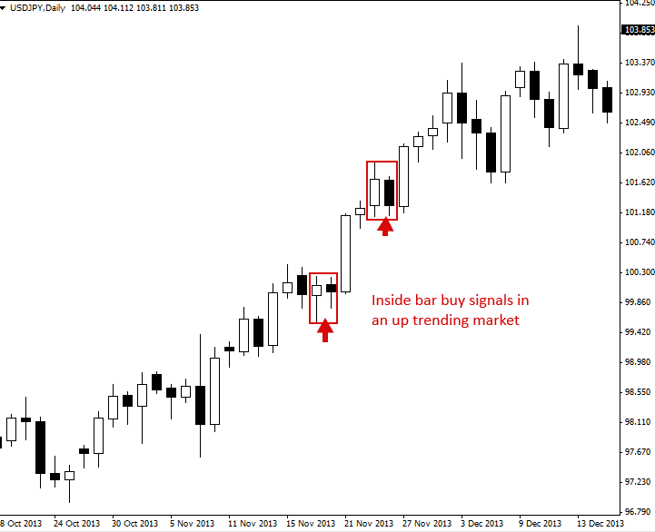
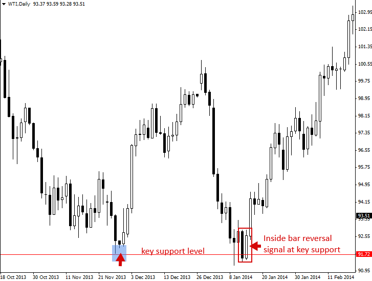

Inside Bar Trading Strategy
The Inside Bar Pattern (Break Out or Reversal Pattern)
An “inside bar” pattern is a two-bar price action trading strategy in which the inside bar is smaller and within the high to low range of the prior bar, i.e. the high is lower than the previous bar’s high, and the low is higher than the previous bar’s low. Its relative position can be at the top, the middle or the bottom of the prior bar.
The prior bar, the bar before the inside bar, is often referred to as the “mother bar”. You will sometimes see an inside bar referred to as an “ib” and its mother bar referred to as an “mb”.
Some traders use a more lenient definition of an inside bar that allows for the highs of the inside bar and the mother bar to be equal, or for the lows of both bars to be equal. However, if you have two bars with the same high and low, it’s generally not considered an inside bar by most traders.
Inside bars show a period of consolidation in a market. A daily chart inside bar will look like a ‘triangle’ on a 1 hour or 30 minute chart time frame. They often form following a strong move in a market, as it ‘pauses’ to consolidate before making its next move. However, they can also form at market turning points and act as reversal signals from key support or resistance levels.

How to Trade with Inside Bars
Inside bars can be traded in trending markets in the direction of the trend, when traded this way they are typically referred to as a ‘breakout play’ or an inside bar price action breakout pattern They can also be traded counter-trend, typically from key chart levels, when traded this way they are often referred to as inside bar reversals.
The classic entry for an inside bar signal is to place a buy stop or sell stop at the high or low of the mother bar, and then when price breakouts above or below the mother bar, your entry order is filled.
Stop loss placement is typically at the opposite end of the mother bar, or it can be placed near the mother bar halfway point (50% level), typically if the mother bar is larger than average.
It’s worth noting that these are the ‘classic’ or standard entry and stop loss placements for an inside bar setup, in the end, experienced traders may decide on other entries or stop loss placements as they see fit.
Let’s take a look at some examples of trading with the inside bar strategy:
Trading Inside Bars in a Trending Market
In the example below, we can see what it looks like to trade an inside bar pattern in-line with a trending market. In this case, it was a down-trending market, so the inside bar pattern would be called an ‘inside bar sell signal’:

Here’s another example of trading an inside bar with a trending market. In this case, the market was trending higher, so the inside bars would be referred to as ‘inside bar buy signals’. Note, often in strong trends like the one in the example below, you will see multiple inside bar patterns forming, providing you with multiple high-probability entries into the trend:

Trading Inside Bars against the Trend, From Key Chart Levels
In the example below, we are looking at trading an inside bar pattern against the dominant daily chart trend. In this case, price had come back down to test a key support level , formed a pin bar reversal at that support, followed by an inside bar reversal. Note the strong push higher that unfolded following this inside bar setup.

Here’s another example of trading an inside bar against the recent trend / momentum and from a key chart level. In this case, we were trading an inside bar reversal signal from a key level of resistance. Also, note that the inside bar sell signal in the example below actually had two bars within the same mother bar, this is perfectly fine and is something you will see sometimes on the charts.
Trading inside bars from key levels of support or resistance can be very lucrative as they often lead to large moves in the opposite direction, as we can see in the chart below…

Tips on Trading the Inside Bar Pattern
- As a beginning trader, it’s easiest to learn how to trade inside bars in-line with the dominant daily chart trend, or ‘in-line with the trend’. Inside bars at key levels as reversal plays are a bit trickier and take more time and experience to become proficient at.
- Inside bars work best on the daily chart time frame, primarily because on lower time frames there are just too many inside bars and many of them are meaningless and lead to false breaks.
- Inside bars can have multiple inside bars within the mother range, sometimes you’ll see 2, 3 or even 4 inside bars within the same mother bar structure, this is fine, it simply shows a longer period of consolidation, which often leads to a stronger breakout. You may see ‘coiling’ inside bars sometimes, these are inside bars with 2 or more inside bars within the same mother bar structure, each inside bar is smaller than the previous and within the high to low range of the previous bar.
- Practice identifying inside bars on your charts before you try trading them live. Your first inside bar trade should be on the daily chart and in a trending market.
- Inside bars sometimes form following pin bar patterns and they are also part of the fakey pattern (inside bar false-break pattern), so they are an important price action pattern to understand.
- Inside bars typically offer good risk reward ratios because they often provide a tight stop loss placement and lead to a strong breakout as price breaks up or down from the pattern.
Original source : https://priceaction.com/price-action-university/strategies/inside-bar/